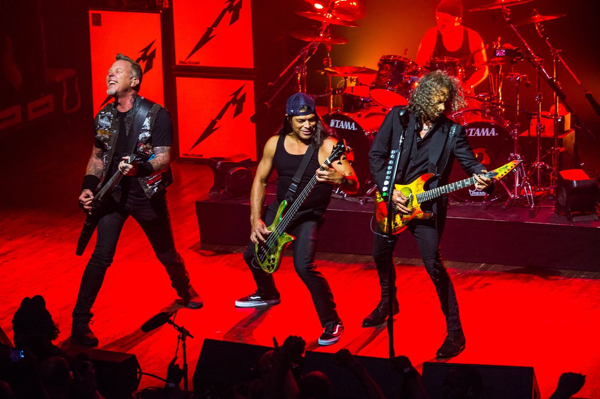
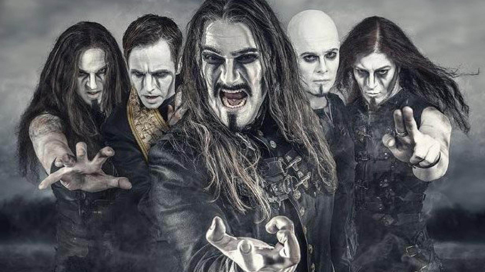
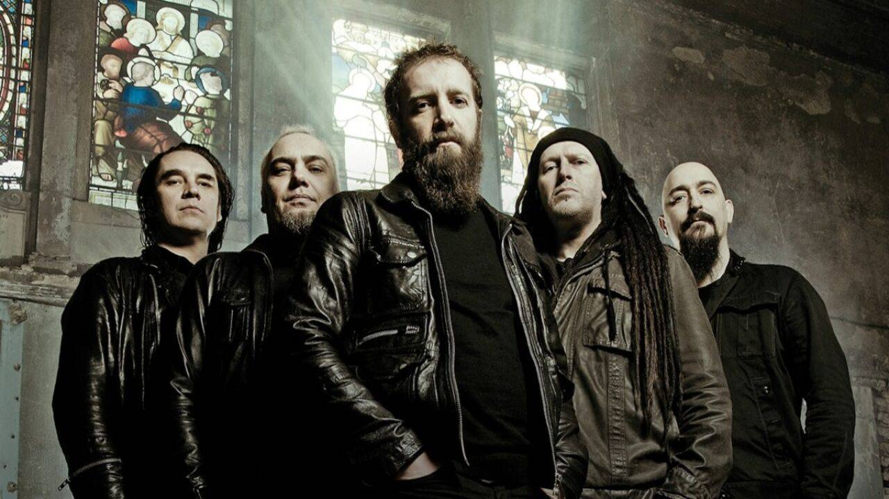
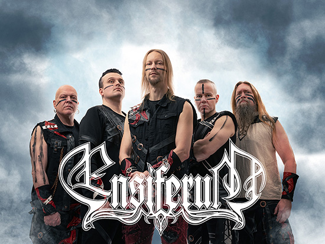
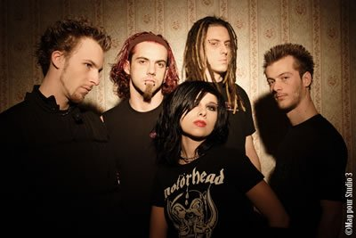
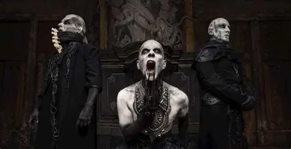
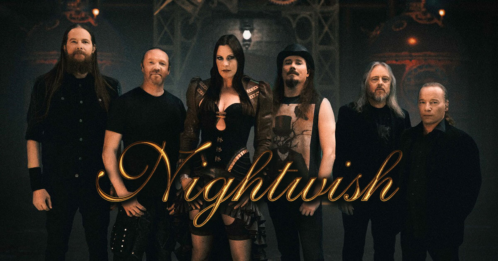
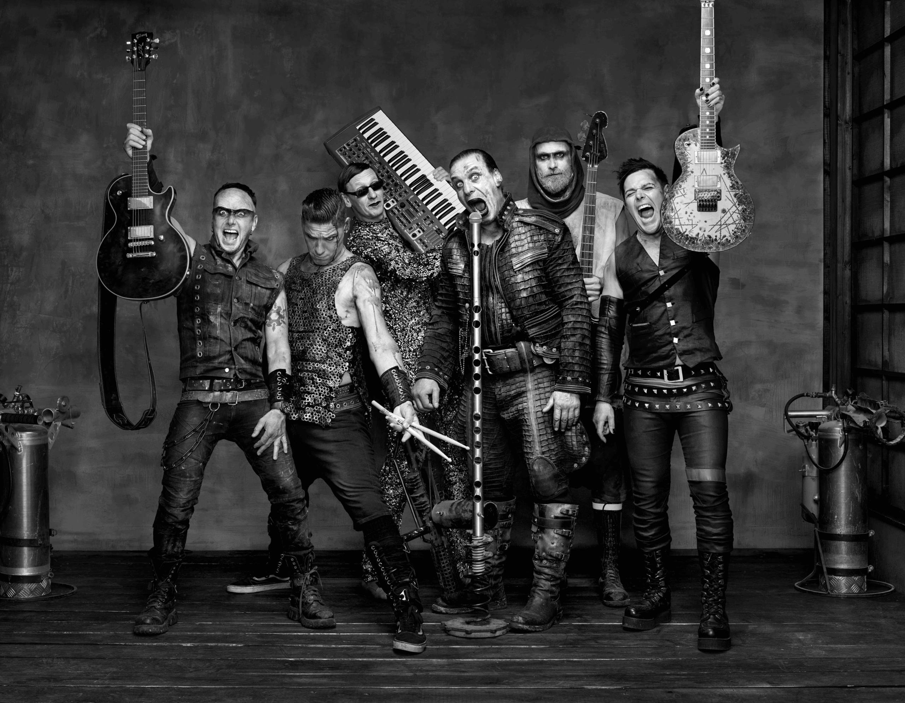
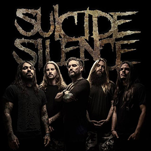
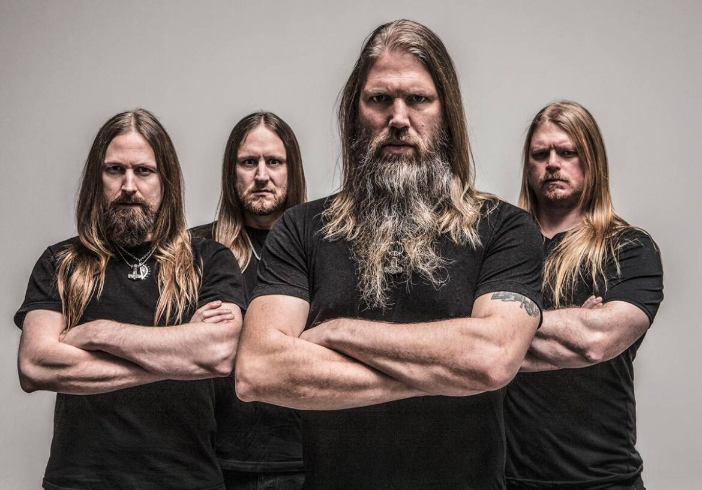

Metallica
Metallica est un groupe de thrash metal américain formé en 1981...
Leur musique est caractérisée par des riffs de guitare rapides, des solos techniques et des paroles souvent
sombres et introspectives...
Le groupe a sorti de nombreux albums à succès, dont "Master of Puppets" et "The Black Album"...

Children of Bodom
Children of Bodom est un groupe de metal finlandais formé en 1994...
Leur musique est caractérisée par des riffs de guitare puissants, des solos rapides et des paroles souvent
inspirées de la mythologie scandinave...
Le groupe a sorti plusieurs albums à succès, dont "Hate" et "I Am the Black Widows"...

Dimmu Borgir
Dimmu Borgir est un groupe de black metal norvégien formé en 1993...
Leur musique est caractérisée par des riffs de guitare puissants, des solos rapides et des paroles souvent
inspirées de la mythologie scandinave...
Le groupe a sorti plusieurs albums à succès, dont "Enthrone Darkness Triumphant" et "Death Cult
Armageddon"...

Lorna Shore
Lorna Shore est un groupe de metal américain formé en 2011...
Leur musique est caractérisée par des riffs de guitare lourds, des breakdowns puissants et des paroles
introspectives...

Powerwolf
Powerwolf est un groupe de metal allemand formé en 2003...
Leur musique est caractérisée par des riffs de guitare épiques, des chœurs puissants et des paroles
inspirées de la mythologie et du folklore...

Paradise Lost
Paradise Lost est un groupe de metal anglais formé en 1987...
Leur musique est caractérisée par des riffs de guitare mélodiques, des atmosphères sombres et des paroles
introspectives...

Ensiferum
Ensiferum est un groupe de folk metal finlandais formé en 1995...
Leur musique combine des éléments de metal mélodique avec des influences folkloriques et vikings...

Tool
Tool est un groupe de rock instrumental américain formé en 1990...
Leur musique est caractérisée par des riffs de guitare complexes, des rythmes inattendus et des paroles
introspectives...

Eths
Eths est un groupe de metalcore français formé en 1996...
Leur musique est caractérisée par des riffs de guitare agressifs, des rythmes complexes et des paroles
engagées...

Babymetal
Babymetal est un groupe de metal japonais formé en 2010...
Leur musique mélange des éléments de metal avec de la pop japonaise, créant un son unique et énergique...

Maximum the Hormone
Maximum the Hormone est un groupe de metal japonais formé en 1998...
Leur musique est caractérisée par des riffs de guitare puissants, des solos rapides et des paroles souvent
inspirées de la mythologie scandinave...

Behemoth
Behemoth est un groupe de black metal polonais formé en 1990...
Leur musique est caractérisée par des riffs de guitare lourds, des breakdowns puissants et des paroles
introspectives...

Nightwish
Nightwish est un groupe de metal finlandais fondé en 1996...
Leur musique est caractérisée par des riffs de guitare mélodiques, des chœurs puissants et des paroles
inspirées de la mythologie et du folklore...

Iron Maiden
Iron Maiden est un groupe de heavy metal britannique formé en 1975...
Leur musique est caractérisée par des riffs de guitare puissants, des solos rapides et des paroles souvent
inspirées de la mythologie scandinave...

Linkin Park
Linkin Park est un groupe de rock américain formé en 1996...
Leur musique est caractérisée par des riffs de guitare lourds, des rythmes puissants et des paroles
introspectives...

Rammstein
Rammstein est un groupe de metal allemand formé en 1994...
Leur musique est caractérisée par des riffs de guitare lourds, des rythmes puissants et des paroles
introspectives...

Suicide Silence
Suicide Silence est un groupe de deathcore américain formé en 2001...
Leur musique est caractérisée par des riffs de guitare lourds, des breakdowns puissants et des paroles
introspectives...

Amon Amarth
Amon Amarth est un groupe de black metal suédois formé en 1996...
Leur musique est caractérisée par des riffs de guitare lourds, des breakdowns puissants et des paroles
introspectives...

Falling in Reverse
Falling in Reverse est un groupe de metal américain formé en 2008...
Leur musique est caractérisée par des riffs de guitare lourds, des rythmes puissants et des paroles
introspectives...